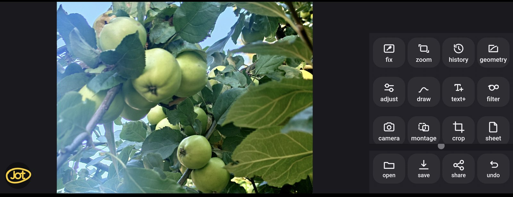
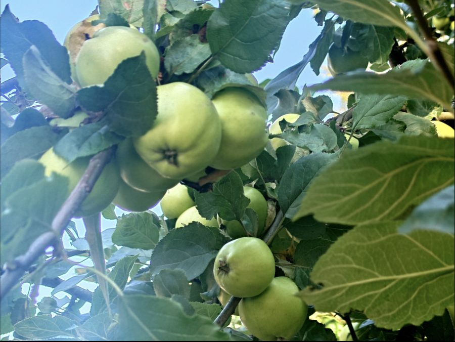

Draw & annotate
Brushes, markers, text and geometric shapes for notes, labels and quick visual edits.
Jot is a compact Android editor for quick image work: draw, crop, add text and shapes, adjust colour, apply filters, remove parts of an image, combine pictures, and save the result.

The app
Jot keeps the image large and the controls close at hand. Tools are grouped by task instead of being buried in long menus, so simple edits stay simple while more unusual tools are still there when you need them.
Brushes, markers, text and geometric shapes for notes, labels and quick visual edits.
Free and fixed-ratio crop, rotation, mirroring, fine angle adjustment and geometry tools.
Brightness, contrast, saturation, blur, sharpen, focus effects, aberration, frames and filters.
Cut areas by shape or colour, soften edges, remove unwanted regions and fill what was cut away.
Add another image, build simple montages and work with several visual elements in one result.
Your current work is kept between launches, so closing the app does not mean starting over.
Try it
A caption, a shape, a pasted picture — all of it goes onto the image itself rather than floating above it. Turn or mirror the result and everything turns with it, exactly as it will when you save.

apples, septemberDrag the slider. The caption is not an overlay — it moves because it is on the image.
A different kind of project
Jot was developed without Android Studio or Gradle. The Android shell hosts a self-contained web application, and the project is assembled directly into the APK. Every line of it was written by Claude in conversation. The source is public, and the finished app is released under the MIT licence.
The project is intentionally experimental. It is both a usable editor and a test of how far a complete Android application can be developed through conversation with AI.
Details
The APK is distributed directly from GitHub rather than through an app store. Android may therefore ask you to allow installation from your browser or file manager.